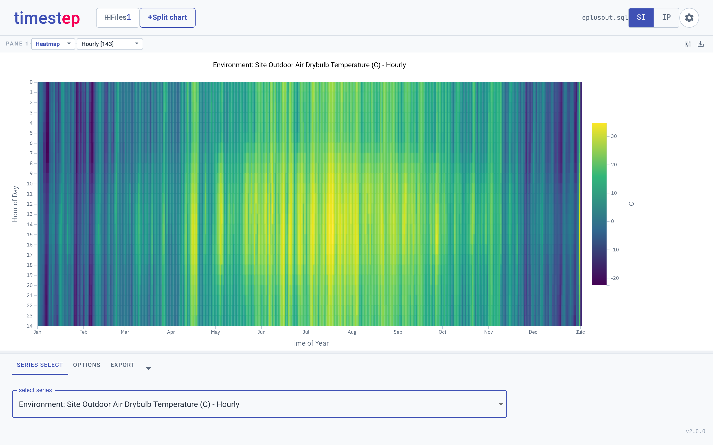
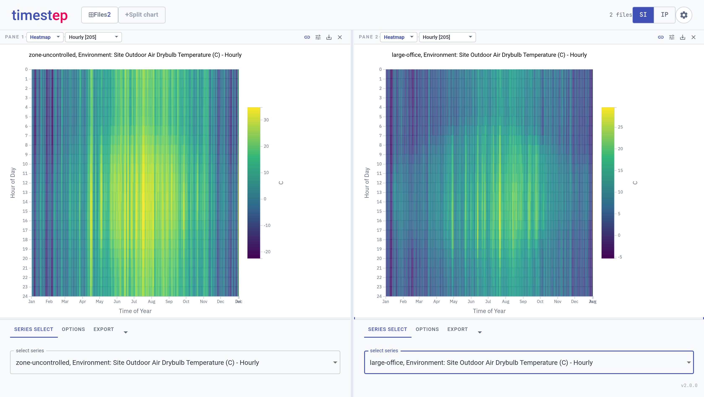
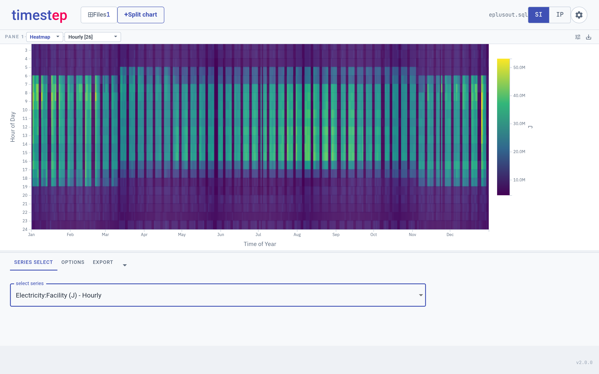
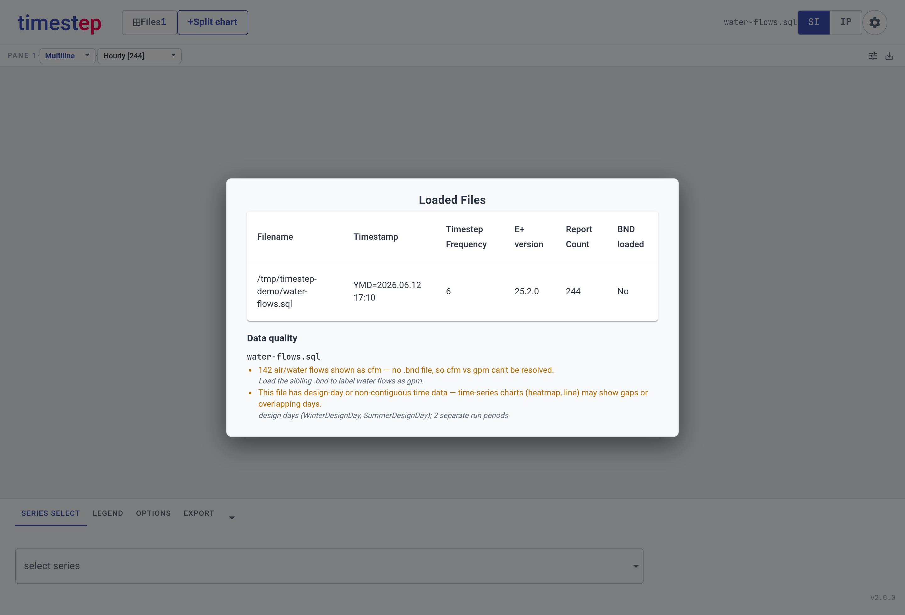

EnergyPlus has rich support for hourly and sub-hourly reporting, but as a model becomes larger and more complex, the simulation output size can become unwieldy for many existing tools. This can result in prohibitively long load-times just to view your simulation results.
Timestep attempts to be a better solution, offering a clean, user-friendly and near-instanteous querying interface, as well as modern data visualization capabilities. It accomplishes this by using the EnergyPlus SQLite Output reporting, and can load and visualize very large simulation output files in seconds, rather than minutes.



